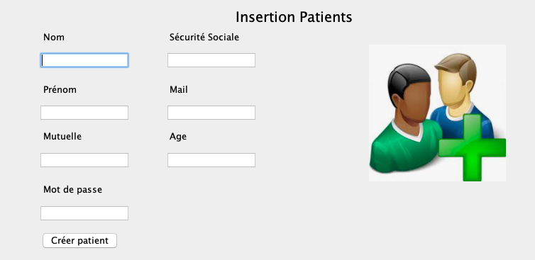

Projet Snack : Alternance de 1 an en tant que développeur Web
A1.1.2 : Etude de l'impact de l'intégration d'un service
Participation à un projet d'un SI
Elaboration des documents relatifs à la production et à la fourniture de service
A1.2.3 : Evaluation des risques liées à l'utilisation d'un service
A1.3.3 : Accompagnement de la mise en place d'un service
A1.2.4 : Détermination des test nécessaires à la validation d'un service
A1.3.4 : Déploiement d'un service
A2.1.1 : Accompagnement des utilisateurs à la prise en main d'un service
A2.3.2 : Porposition d'une amélioration d'un service
A4.1.2 : Conception ou adaptation de l'interface utlisateur d'une solution applicative
A4.1.3 : Conception ou adaptation d'une Base de données
A4.1.4 : Définition des caractéristiques d'un solution applicative
A4.1.8 : Réalisation des tests nécessaires à la validation déléments adaptées ou développées
A4.1.10 : Rédaction d'une documentation technique
A4.2.1 : Analyse et correction d'un dysfonctionnement d'un problème de qualité
A4.2.2 : Adaptation d'une solution applicative aux évolutions de ses composants
A4.2.4 : Mis à jour d'une documentation technique
A5.2.4 : Etude d'une technologie
A5.2.4 : Analyse d'une technologie (FIGMA,Jquery,Javascript,Php,HTML,Css,Bootstrap,SweetAlert,SQL)
Application JAVA service Eleve et Professeur
Participation à un projet d'évolution d'un SI
A1.1.1 : Analyse d'un cahier des chagres d'un service à produire
A1.1.3 : Etude des exigences liées à la qualité attendue d'un service
A1.2.1 : Elaboration et présentation d'un dossier de choix de solution technique
A1.2.3 : Evaluation des risuqes liés à l'utilisation d'un service
A1.3.1 : Test d'intégration et d'acceptation d'un service
A1.3.4 : Déploiement d'un service
A1.4.1 : Participation à un projet
A1.4.2 : Evaluation des indicateur de suivi d'un projet et justification des écarts
A1.4.3 : Gestion des ressources
A4.1.1 : Proposition d'une solution applicative
A4.1.3 : Conception ou Adaptation d'une base de données
A4.1.5 : Prototypage de composant logiciel
A4.1.7 : Développement, utilisation ou adaptation de composant logiciel
A4.1.8 : Réalisation des tests nécessaire à la validation déléments adaptées ou développées
A4.1.9 : Rédaction d'une documentation technique
A4.1.10 : Rédaction d'un documentation d'utilisation
A4.2.4 : Mis à jour d'une docuementation technique
A5.1.2 : Recueil d'information sur une configuration et ses éléments
A5.2.4 : Etude d'une technologie,d'un composant d'un outil ou d'un méthode

Site de réservation de place de cinéma
Participation à un projet d'évolution d'un SI
Elaboration de docuements relatifs à la production et à la fourniture de services
A1.1.1 : Analyse du cahier des charges d'un service à produire
A1.1.3 : Etude des exigences liées à la qualité attendue d'un service
A1.2.1 : Elaboration et présentation d'un dossier de choix de solution technique
A1.2.3 : Evaluation des risques liés à l'utilisation d'un service
A1.3.1 : Test d'intégration et d'acceptation d'un service
A1.3.4 : Déploiement d'un service
A1.4.1 : Participation à un projet
A1.4.2 : Evaluation des indicateur de suivi d'un projet et justification des écarts
A1.4.3 : Gestion des ressources
A2.3.1 : Indentification,qualification et Evaluation d'un service
A2.3.2 : Proposition d'amélioration d'un service
A4.1.2 : Proposition d'une solution applicative
A4.1.2 : Conception ou adaptation de l'interface utilisateur d'une solution applicative
A4.1.3 : Conception d'une base de données
A4.1.6 : Gestion d'environnement de développement et de test
A4.1.8 : Réalisation des test nécessaires à la validation déléments adaptées ou développés
A4.1.9 : Rédaction d'une documentation technique
A4.1.10 : Rédaction d'une documentation d'utilisation
A4.2.1 : Analyse et correction d'un dysfonctionnement, d'un problème de qualité
A4.2.4 : Mise à jour d'un cahier des chagre
A5.2.4 : Etude d'une technologie, d'un composant ou d'un outil ou d'une méthode

Site de restauration
Participation à un projet d'évolution d'un SI
A1.1.1 : Analyse d'un cahier des chagres d'un service à produire
A1.1.3 : Etude des exigences liées à la qualité attendue d'un service
A1.2.1 : Elaboration et présentation d'un dossier de choix de solution technique
A1.4.1 : Participation à un projet
A4.1.9 : Rédaction d'une documentation technique
A4.1.10 : Rédaction d'une documentation d'utilisation
A1.1.1 : Analyse du cahier des charges d'un dervices à produire
A4.1.2 : Proposition d'une solution applicative
A4.1.2 : Conception ou adaptation de l'interface utilisateur d'une solution applicative
A4.1.3 : Conception d'une base de données
A4.1.6 : Gestion d'environnement de développement et de test
A1.1.3 : Etude des exigences liées à la qualité attendue d'un service
A1.2.1 : Elaboration et présentation d'un dossier de choix de solution technique


Site Web de prestation médical
Participation à une projet
A1.1.2: Etude de l'impact d'intégration d'un service sur le système informatique
A1.1.3 : Etude des exigences liées à la qualités attendue d'un service
A1.2.1 : Elaboration et prsentation d'un dossier de choix de solution technique
A1.2.3 : Evluation des risques liées à l'utilisation d'un service
A1.3.1 : Test d'intégration et d'acceptation d'un service
A1.3.4 : Déploiement d'un service
A1.4.1 : Participation à un projet
A1.4.2 Evaluation des indicateurs de suivi d'un projet et justification des écarts
A1.4.3 : Gestion des ressources
A2.3.2 : Proposition d'amélioration d'un service
A4.1.1 : Proposition d'une soltion applicative
A4.1.2 : Conception ou adaptation de l'interface utilisateur d'une solution applicative
A4.1.3 :Conception d'une base de données
A4.1.6 : Gstion d'environnement de développement et de test
A4.1.8: : Réalisation des tests nécessaires à la validation déléments adaptées ou développées
A4.1.9 : Rédaction d'une documentation technique
A4.1.10 : Rédaction d'une documentation d'utilisation
A4.2.1 : Analyse et correction d'un dysfonctionnement, d'un problème de qualité
A4.2.4 : Mise à jour d'une documentation technique
A5.2.4 : Etude d'un technologie, d'un composant d'un outil ou d'un méthode


Application java de prestation médicale
Participation à un projet d'évolution d'un SI
A1.1.1 : Analyse d'un cahier des chagres d'un service à produire
A1.1.3 : Etude des exigences liées à la qualité attendue d'un service
A1.2.1 : Elaboration et présentation d'un dossier de choix de solution technique
A1.2.3 : Evaluation des risuqes liés à l'utilisation d'un service
A1.3.1 : Test d'intégration et d'acceptation d'un service
A1.3.4 : Déploiement d'un service
A1.4.1 : Participation à un projet
A1.4.2 : Evaluation des indicateur de suivi d'un projet et justification des écarts
A1.4.3 : Gestion des ressources
A4.1.1 : Proposition d'une solution applicative
A4.1.3 : Conception ou Adaptation d'une base de données
A4.1.5 : Prototypage de composant logiciel
A4.1.7 : Développement, utilisation ou adaptation de composant logiciel
A4.1.8 : Réalisation des tests nécessaire à la validation déléments adaptées ou développées
A4.1.9 : Rédaction d'une documentation technique
A4.1.10 : Rédaction d'un documentation d'utilisation
A4.2.4 : Mis à jour d'une docuementation technique
A5.1.2 : Recueil d'information sur une configuration et ses éléments
A5.2.4 : Etude d'une technologie,d'un composant d'un outil ou d'un méthode


Morpion dynamique
A5.2.4 : Etude d'un technologie d'un composant ou d'un outil
A4.1.1 : Proposition d'une solution applicative
A1.4.1 : Participation à un projet
A1.2.4 : Détermination des test nécessaire
A4.1.6 : Gstion d'environnement de développement et de test
A5.2.4 : Analyse d'une technologie (Html, CSS,Javascript)
Application de Suivi Client
Participation à un projet d'écolution d'un SI
A1.11 : Analyse d'un cahier des charges
A1.4.1 : Participation à un projet
A4.1.1 : Proposition d'une solution applicative
A4.1.2 : Conception ou adaptation d'une interface
A4.16 : Gestion de développement d'environnement ou de tests
A4.21 : Analyse et correction des dysfonctionnement
A4.2.3 :Réalisation des nécessaire à la mise en production
A5.2.4 : Etude d'un technologie d'un composant ou d'un outil
Rédaction d'un fichier XML
Participation à un projet d'écolution d'un SI
A1.11 : Analyse d'un cahier des charges
A1.4.1 : Participation à un projet
A4.1.1 : Proposition d'une solution applicative
A4.1.2 : Conception ou adaptation d'une interface
A4.16 : Gestion de développement d'environnement ou de tests
A4.21 : Analyse et correction des dysfonctionnement
A4.2.3 :Réalisation des nécessaire à la mise en production
A5.2.4 : Etude d'un technologie d'un composant ou d'un outil